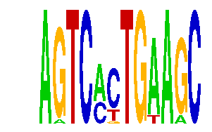

family_1 |
|---|
|  |
| Download PWM |
| Download instances (motifs) |
| Show motif distribution |
Query_ID | Query_Consensus | Subject_Name | Source_DB | Subject_ID | Length | Orientation | Offset | Divergence | Overlap | Subject_Consensus |
|---|---|---|---|---|---|---|---|---|---|---|
| family_1 | AGTCACTGAAGC | JUN | HOCOMOCO | JUN_HUMAN.H10MO.A | 9 | as given | -3 | 0.460 | 6 | NTGAGTCAY |
| family_1 | AGTCACTGAAGC | Nr2e3 | JASPAR | MA0164.1 | 7 | reverse-complement | 8 | 0.698 | 4 | CAAGCTT |
| family_1 | AGTCACTGAAGC | JUNB | HOCOMOCO | JUNB_HUMAN.H10MO.C | 11 | as given | -5 | 0.357 | 6 | NNRTGAGTCAY |
| family_1 | AGTCACTGAAGC | SMRC1 | HOCOMOCO | SMRC1_HUMAN.H10MO.D | 11 | as given | -5 | 0.436 | 6 | NNNTGAGTCAS |
Sequence | Start_position (from start) | Start_position (from end) | Average conservation | Best conservation score | Instance_with_best_CS | Best_Z-score | Instance_with_best_ZS | Strand |
|---|---|---|---|---|---|---|---|---|
| chr11:17130700-17133400 | 1932 | 1944 | 0.08325 | 0.761 | AGTCMCTGAARC | 14.270282 | AGTCMSTGAAGC | 1 |
| chr6:84133200-84134842 | 979 | 991 | 0.0548333 | 0.206 | AGTCMCTGAARC | 14.270282 | AGTCMCTGAARC | 1 |
| chr9:79822400-79823600 | 483 | 495 | 0.269917 | 0.525 | AGTCMYTGAAGC | 13.9379015 | AGTCMCTGWAGC | 1 |
| chr11:30158013-30159500 | 837 | 849 | 0.0100833 | 0.081 | AGTCMYTGAAGC | 17.276688 | AGTCMYTGAAGC | -1 |
| chr17:7479083-7481400 | 339 | 351 | 0.000916667 | 0.003 | AGTCMCTGWAGC | 13.9379015 | AGTCMCTGWAGC | 1 |
| chr12:15599800-15601902 | 784 | 796 | 0.000416667 | 0.001 | AGTCMYTGAAGC | 17.276688 | AGTCMYTGAAGC | 1 |
| chr1:63948383-63949383 | 822 | 834 | 0.00191667 | 0.005 | AGTCMCTGAARC | 14.270282 | AGTCMSTGAAGC | 1 |
| chr12:73107900-73110855 | 2723 | 2735 | 0.0156667 | 0.022 | AGTCMCTGWAGC | 14.270282 | AGTCMCTGAARC | 1 |
| chr5:52294300-52297200 | 1145 | 1157 | 0.37125 | 0.732 | AGTCMSTGAAGC | 14.270282 | AGTCMCTGAARC | 1 |
| chr15:76936826-76938578 | 560 | 572 | 0.00158333 | 0.004 | AGTCMYTGAAGC | 14.270282 | AGTCMCTGAARC | 1 |
| chr2:72203700-72205100 | 927 | 939 | 0.19575 | 0.596 | AGTCMCTGAARC | 17.276688 | AGTCMYTGAAGC | 1 |
| chrX:56572169-56573169 | 239 | 251 | 0.0005 | 0.003 | AGTCMSTGAAGC | 14.270282 | AGTCMSTGAAGC | 1 |
| chr17:63071600-63073300 | 1435 | 1447 | 0.218667 | 0.652 | AGTCMSTGAAGC | 14.270282 | AGTCMCTGAARC | 1 |
| chr5:77555456-77556500 | 118 | 130 | 0.015 | 0.04 | AGTCMYTGAAGC | 17.276688 | AGTCMYTGAAGC | 1 |
| chr14:47507600-47509700 | 682 | 694 | 0.00333333 | 0.011 | AGTCMCTGAARC | 14.270282 | AGTCMCTGAARC | -1 |
| chr15:27168300-27169300 | 651 | 663 | 0.00125 | 0.003 | AGTCMYTGAAGC | 17.276688 | AGTCMYTGAAGC | 1 |
| chr1:129226000-129228000 | 831 | 843 | NA | NA | AGTCMCTGAARC | 13.9379015 | AGTCMCTGWAGC | 1 |
| chr4:98618900-98620583 | 0 | 12 | 0.72025 | 0.916 | ARTCMCTGAAGC | 14.270282 | ARTCMCTGAAGC | 1 |
| chr12:41885500-41887459 | 874 | 886 | 0.0226667 | 0.146 | AGTCMCTGWAGC | 13.9379015 | AGTCMCTGWAGC | 1 |